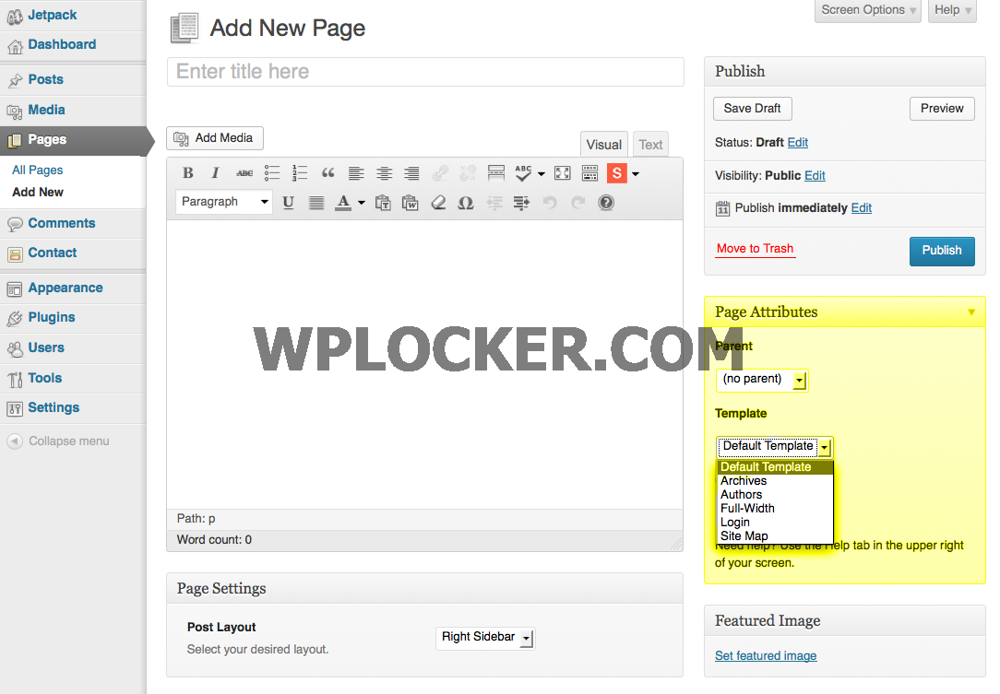

If you find any bugs with this theme get in touch with a clear description of the problem so we can fix it. However we do not support modifications such as: changing the appearance or functionality of the theme.
Looking for a new hosting plan for your Website or WordPress installation? We highly recommend WPEngine their great prices, hardware and great customer service. Check out WPEngine →
The following things are required to run this product:
This theme supports the following external plugins to provide functionality:
You'll want to install this theme just like any other WordPress theme, either by uploading the main theme folder via FTP (unzipped) or the zipped file via the Wordpress theme upload section. Make sure you located the main theme folder from the downloaded zip file and that you are not uploading the entire zip with all the documentation, sample data, etc. Watch the
Go to your Settings → Permalink settings and hit the save button. This is to prevent any 404 errors on custom post type pages.
This theme includes a .xml file that will allow you to import some sample data to your site. We don't provide every single page and image from our live demo because it's overbloated and would be unnecessary for you to have all that, but we do include at least 1 of each main theme function to make it easier for you to see how the theme works.
Once your Sample Data is imported your site should have similar content as on the Sample Data Site. Whenever you upload sample data though, you will have to go to Settings → Reading to define your homepage and also go to Appearance → Menu to set your menu locations. Also you will have to setup your widgets as they are not included in a WordPress export.xml.
This theme makes use of the "Slightly Modified Options Framework" for the theme options. To access this panel you would log into your WordPress dashboard and browse to Appearance → Theme Options, as shown below.
Options Overview
You can make a variety of customizations using the options in each tab section. Responsiveness and retina options can be found on the General tab. To enable infinite scroll, load more, or standard pagination on the homepage and archive reference the Blog tab.If you make any changes to the theme options, make sure you click the button to "save all changes".
Because this is a blogging theme, the homepage shows your latest posts automatically. But you can add a unique homepage slider and carousel using the Theme Options Panel.
The homepage slider and carousels on the homepage use a transient which caches the queries so that your site loads quicker. This means if you alter the queries (add more posts or change the category) you'll need to clear the cache. To do so simply load your homepage with the following at the end of the URL: ?clear-cache
Example: http://www.yoursite.com/?clear-cache
This theme makes use of the WordPress featured images function a lot so you'll need to know how to add featured images. We recommend using images that are at least 960px wide (the bigger the better, especially if you want your site to be retina ready). However, if you choose to use smaller images they will be stretched to fit.
Due to the responsive nature of this theme and our effort to keep the quality of your images high, featured images used in this theme have specific cropping sizes. All the image cropping/resizing for this theme is controlled via a function at functions/img-default-sizes.php. This means you can easily change your featured image sizes via a filter in your child theme or copy and paste the entire function into your child theme and edit accordingly.
Images are also cropped using the aqua-resizer script which uses native WordPress functions for cropping your images. This means images are cropped "on-the-fly" so if you make changes to any default image sizing you don't have to run the regenerate thumbnails plugin.
If the featured images are not working make sure the GD Library is installed and active on your server. WordPress requires it to resize and crop images.
This theme makes it really easy to create a slider at the top of your gallery post format posts. All you have to do is select the gallery post format. This will make a metabox appear that reads "Image Gallery" at the top. Click on the button that says "Add/Edit Images" to add new images to the gallery.
Re-ordering Images: To re-order images just click on one and drag it to re-arrange it
Removing Images: To remove an image hover over it and click the small red "x" in the top right corner.
GoodInc includes page templates to make it easier for you to create your website. Simply choose from the included page templates for default, archive, authors, full, login and sitemap when setting up your website.
To add a page click on Pages > Add New. Give your page a title (About, Archives, Authors etc.) and add your content. Make sure you select a template from the righthand sidebar in the Page Attributes box that is relevant to your page.
This template is for standard pages with a sidebar.
This template is for the blog post archive page.
This template is for an author, staff or contributor bio & contact page.
This template is for full-width pages (no sidebar).
This template is for creating a custom login page for your authors, staff, contributors, etc.
This template is for the sitemap.
The Blog supports multiple post styles (as well as a handful of special related post settings) for various types of media.
This is a standard/default post style. You can add a featured image to display on the homepage while the post will only display text.
The image post style includes the featured image on both the homepage and the post.
For the video post style just paste your video URL in the oEmbed URL box in the post settings. You can also add a featured image to be displayed on the homepage and/or in sliders.
For a quote use the title for your reference, type the actual quote in the main text area, and add the Quote Author in the post settings.
To add a link post, just paste the URL in the Link URL box in the post settings.
Aside posts are displayed in orange (no featured image) on the homepage. Just select this style and add your text. If you would like to add a bold title, add it in the main text area and select a heading style.
The status post style enables you to add Tweets to your blog. Just paste your Tweet URL in the oEmbed URL box in the post settings.
On audio posts you can add a featured image to display on the homepage, slider or carousel. Just paste your audio URL in the oEmbed URL box in the post settings and a music player will be displayed on the post (we used SoundCloud in the demo).
The Blog supports the ability to select a gallery (slider) post format. This is an option that you can select on a per-post basis when you add posts to your blog. Just select the "Gallery" option in the Post Format box on the right. See image below:
The slider works by showing all the images attached to your post. So in order to show an image in the slider you MUST upload it to the post (this is how WordPress core works) you can't select images already in your library. The template file will loop through all post attachments automatically for the slider output. See below:
We have included our own Gallery Management MetaBox for easier slider management. This shows all attached below the post editor so its easier for you and/or your client. This real-time metabox shows your images and you can quickly add more images, delete images by clicking the red "x" and rearrange images from here. See below:
Creating a contact page is super simple. In our live demo what we've done is used the map shortcode from the Symple Shortcodes plugin, an H2 heading, a solid divider shortcode and then we used the Contact Form 7 plugin for the actual form. It's a free plugin and highly recommended by many.
Simply install the Contact Form 7 plugin, navigate to the "Contact" option on the main dashboard menu, and select "Add New"
Edit the form fields, your contact email, and customize any of your auto messages. Save the form and then use the shortcode provided in the brown bar at the top to insert your contact form wherever you want it.
GoodInc includes a widgetized sidebar and lots of styled widgets for you to pick from. Standard widgets (like the custom menu and tags) have been styled to match the clean style of the theme.
GoodInc includes custom widgets designed to fit the style and purpose of the theme. The custom widgets are for Recent Posts, Recent Posts Slider, Flickr Stream, and Video.
To select a widget, just drag and drop the widget from the "Available Widgets" area to the Sidebar area/order you want it in. If there are any widgets you have saved settings for that you don't want to use right now but might want to in the future you can drop them in the "Inactive Widgets" section for later use.
To add a menu to your sidebar use the Custom Menu Widget. Fist create a new menu by going to Appearance → Menus and clicking the "+" tab. Name your menu and add your menu items. Then go to Appearance → Widgets. Drag the Custom Menu Widget into the sidebar and select your new custom menu from the drop-down.
GoodInc includes the premium Taqyeem Ratings & Reviews plugin.
To add unlimited sidebars install the WooSidebars plugin, navigate to the "Appearance" then "Widget Areas", and select "Add New"
Once installed, you will also see a few new widgets available. These are:
For detailed documentation visit the Taqyeem Online Docs
This theme of course comes with support and custom styling for the Symple Shortcodes plugin which we developed for free and share on our site.
Using the plugin is very simple, once installed you'll see a drop-down button in your post editor which you can use to insert shortcodes into your posts or pages.
GoodInc supports the WooSidebars free plugin.
To add unlimited sidebars install the WooSidebars plugin, navigate to the "Appearance" then "Widget Areas", and select "Add New"
Add a name for your new sidebar, select which sidebar it will replace, and then set the conditions for your sidebar. Select individual pages, specific page templates, post types, taxonomies, etc.
Now navigate to "Appearance" and then "Widgets" to add widgets to your new sidebar
Please remember you have purchased a very affordable theme and you have not paid for a full-time web design agency. Occasionally we will help with small tweaks, but these requests will be put on a lower priority due to their nature.
Support is also 100% optional and we provide it for your connivence, so please be patient, polite and respectful.
Thank you!
This is AJ Clarke the owner of Symple Workz and more specifically WPExplorer.com. I wanted to thank you personally for purchasing our WordPress theme. I hope you enjoy the theme fully and that it works well for your or your client's website.
Also a thanks to all the awesome resources I've used/purchased for the development of this theme.
{kind=link}
{kind=link}
{kind=link}
{kind=link}
{kind=link}
{kind=link}
{kind=link}
{kind=link}
{kind=link}
{kind=link}
{kind=link}
{kind=link}
{kind=link}
{kind=link}
{kind=link}
{kind=link}
{kind=link}
{kind=link}